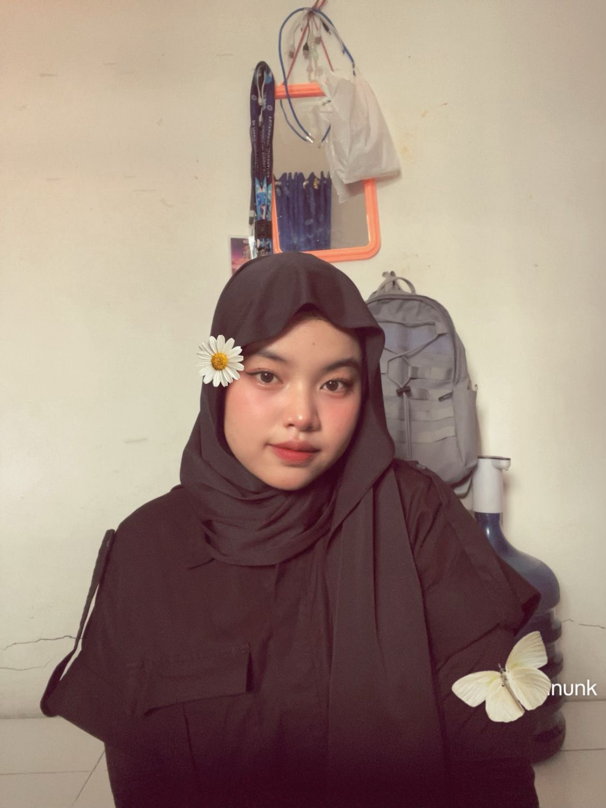
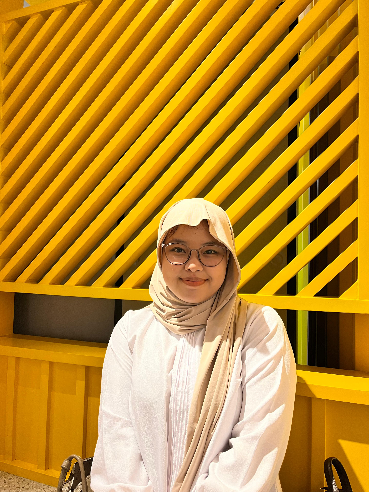
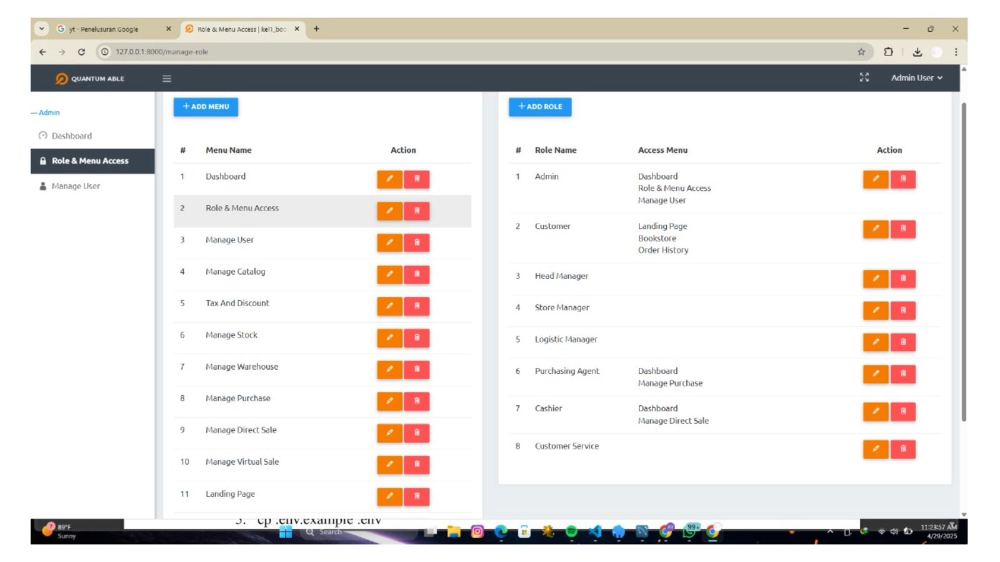
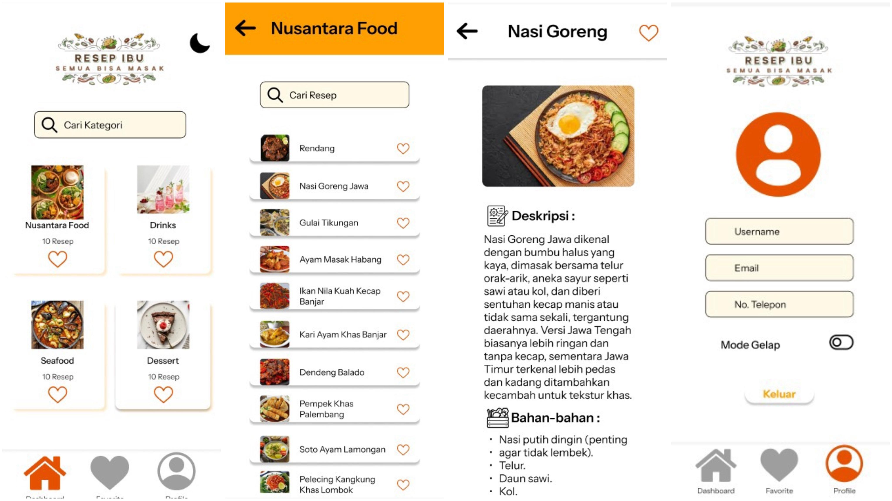
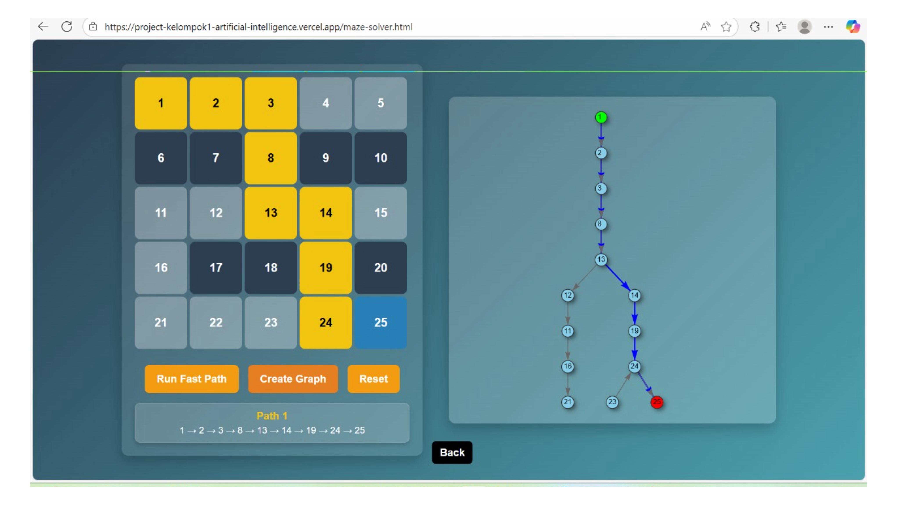
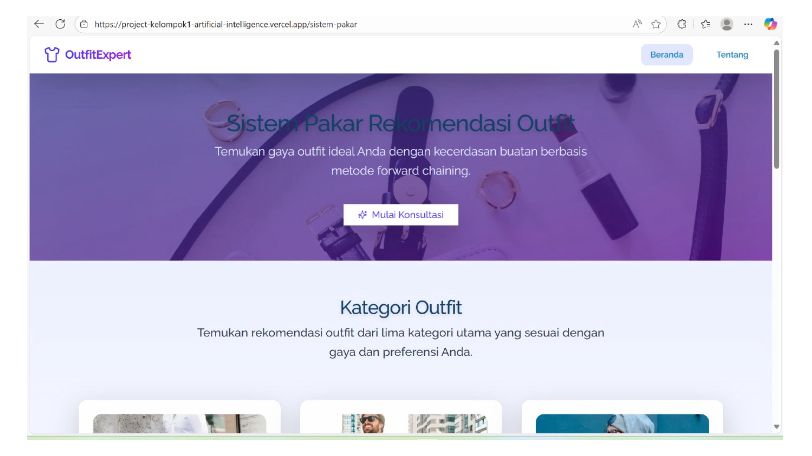
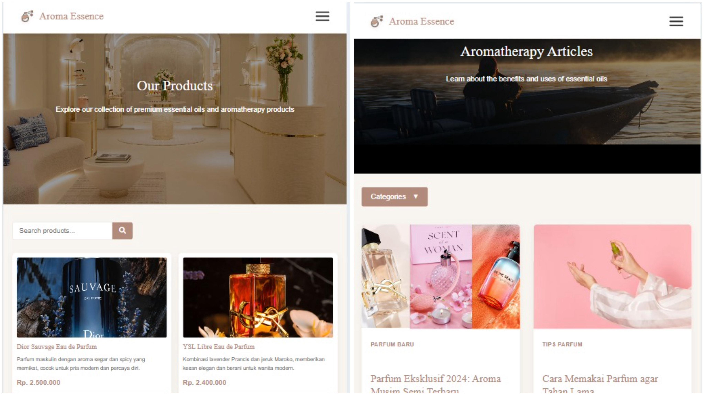
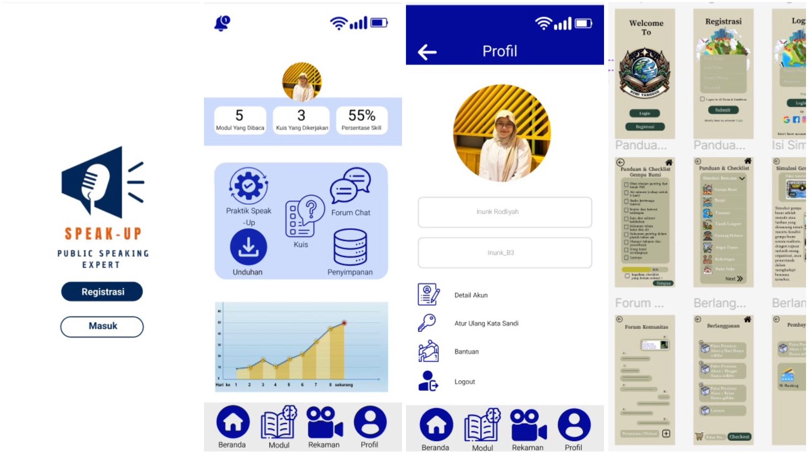

"Learning is a never-ending journey"


I'm Inunk Rodliyah, an enthusiastic and detail-oriented D4 Informatics Engineering student at Airlangga University (GPA 3.49). I have a strong understanding of front-end and back-end web development, as well as a growing interest in computer networking. Experienced in managing team projects and a quick adapter, I'm eager to apply my technical skills and proactive mindset to make a real contribution.
See More
A web-based bookstore management system for efficient inventory, sales, and stock reporting. This project focuses on robust back-end development and database optimization to ensure fast and secure transactions.

A web/mobile application for managing and sharing recipes, featuring advanced search features, category management, and a rating system. Skills honed in front-end development (UI/UX) and RESTful API integration.

Implementation of an interactive maze game that uses the Breadth-First Search (BFS) algorithm to automatically find the shortest exit path. This project focuses on understanding and applying the concepts of Algorithms and Data Structures in practice.

A web-based expert system that recommends outfits based on user input (weather, event, mood). It uses Forward Chaining for intelligent decision-making, demonstrating expertise in basic Artificial Intelligence.

A functional e-commerce website for perfume sales, complete with a shopping cart, checkout process, and admin-based product management. Training in payment system implementation, data security, and responsive web design principles.

Complete User Interface (UI) and User Experience (UX) design for the Speak Up and Bumi Tangguh applications. This included user flow, wireframing, and final prototyping, with a focus on User-Centered Design and accessibility.
My journey in Informatics Engineering at Airlangga University was an intensive period focused on mastering Full-Stack Development and Computer Networking. My main highlight was successfully leading teams in academic projects that implemented Agile methodologies, teaching me that effective communication is as important as coding skills. The biggest challenge, namely balancing studies, projects, and active roles in student organizations (such as HIMTI), has forced me to develop strong self-discipline, superior time management, and attention to detail—non-technical skills that have now become key assets. This reflection confirms my readiness to bring the spirit of continuous learning and a proactive mindset to the industrial world.